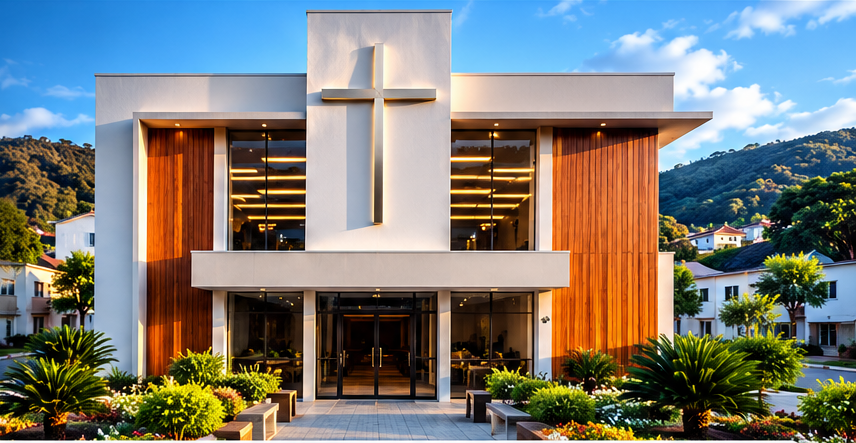

AÇÕES SOCIAIS
AÇÕES SOCIAIS
Culto da Família
Domingo • 19h


Um lugar de comunhão, adoração e transformação de vidas através do amor de Jesus Cristo.
CONHEÇA NOSSA IGREJA →

A Igreja Luz do Caminho é uma comunidade cristã comprometida com a Palavra de Deus, com a comunhão entre os irmãos e com o serviço ao próximo. Nosso propósito é ser luz neste mundo, anunciando o amor de Jesus e caminhando juntos na fé, esperança e amor.
“Lâmpada para os meus pés é a tua palavra e luz para o meu caminho.”
Salmos 119:105
Venha adorar e crescer conosco!
Domingo • 19h
Quarta-feira • 19h30
Sexta-feira • 19h30
Momentos de fé, comunhão e participação comunitária.
19h • No templo
8h • Comunidade
19h • No templo